Tutorial: Creating a CUmulus instance#
Learning Objectives:#
Logging into CUmulus via Horizon (the CUmulus web portal)
Creating your instance (i.e. virtual machine)
Logging into your instance via
ssh
Part 1: Logging in to CUmulus via Horizon#
Horizon is the CUmulus web portal, hosted at https://cumulus.rc.colorado.edu. Let’s take a brief tour of Horizon.
Log in with your institution’s credentials:#
Navigate to https://cumulus.rc.colorado.edu and authenticate using your insitution’s credentials (e.g., University of Colorado Boulder)
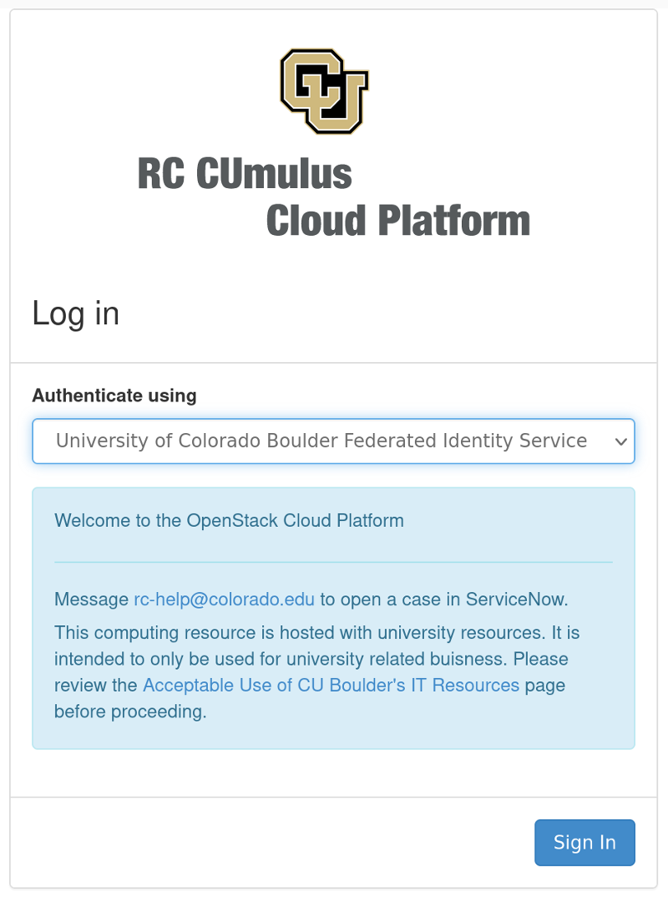
Part 2: Instance Creation#
Instance creation: Launch a new instance#
Instances are virtual machines that run inside the cloud, more simply: an instance is just a digital version of a physical computer.
Instances can perform almost all of the same functions as a computer, including running applications and operating systems.
Do the following:
Select a project
Navigate to “Compute”
Select “Instances”
click “Launch Instance” to begin creating your virtual machine.
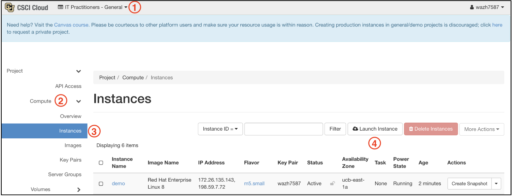
Instance creation: Details#
The first instance creation screen is entiled Details:
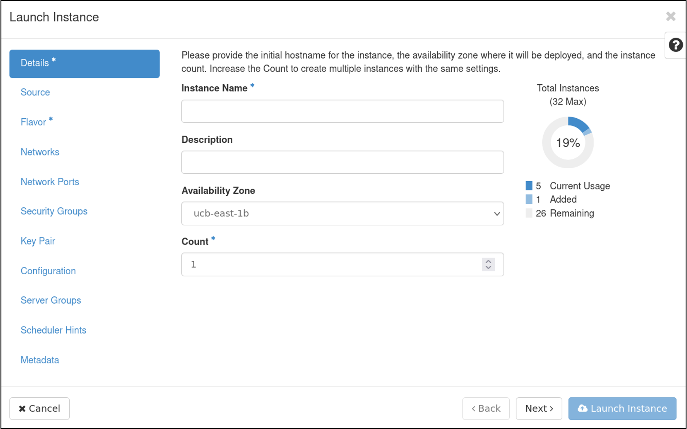
Fill out the instance name and description
availability zone and count can be left as default. This value is set to the availability zone given by the cloud provider (for example, us-west or apac-south).
click
Nextwhen done to go to the Source screen.
Instance creation: Source#
Next, we’ll select our boot source. We’re starting a new instance from scratch here so we’ll boot from a source OS image.
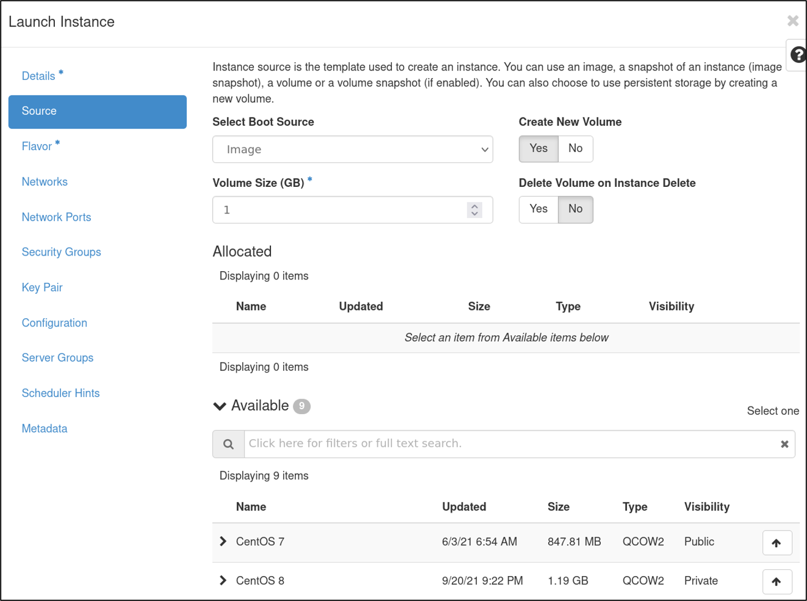
Choose an operating system from the list of images CURC provides (in this example we pick Ubuntu 18.04)
Choose a storage volume size
For this tutorial, choose 4 GB
Choosing an image will auto-populate the size, warning you if it is too small
Choose to have your storage volume deleted on Instance Deletion
If you select No be aware “zombie” volumes will remain when the instance is deleted (you will need to remove them manually later!)
click
Nextwhen done to go to the Flavor screen.
Instance creation: Flavor#
A flavor defines the compute, memory, and storage capacity of our instance.
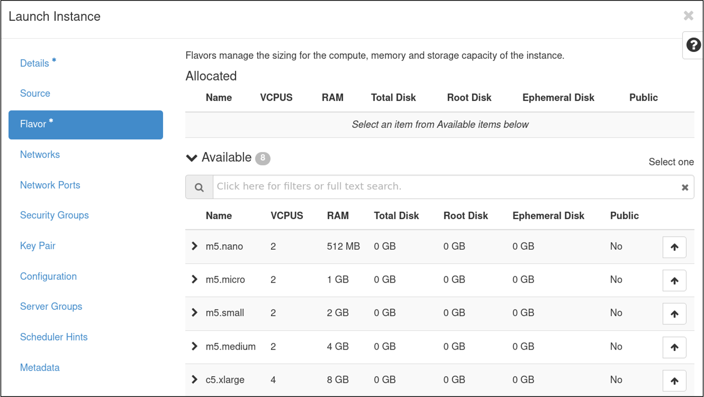
Choose the most appropriate sizing for your use case from a list of pre-selected resources
For this tutorial, select the smallest size
click
Nextwhen done to go to the Networks screen.
Instance creation: Networks & Network Ports#
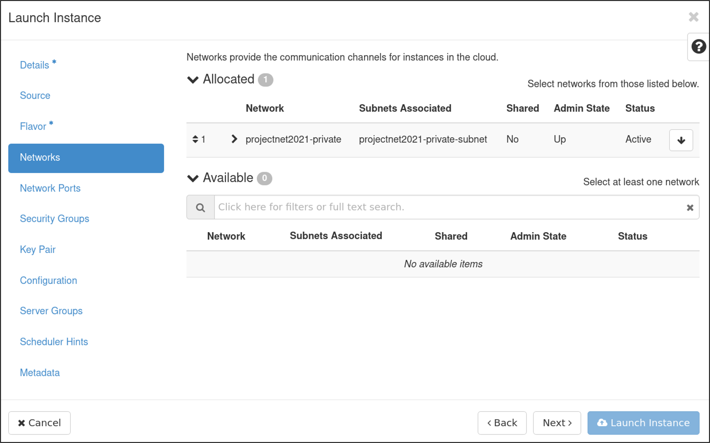
Select a project network, which determines routability of either a public/internet (26140) or campus/internal (1840) floating IP.
For this tutorial we’ll choose an external network, 26140
click
Nextwhen done to go to the Ports screen.Ports provide extra communication channels to your instances.
You can select ports instead of networks or a mix of both.
click
Nextwhen done to go to the Security Groups screen.
Instance creation: Security Groups#
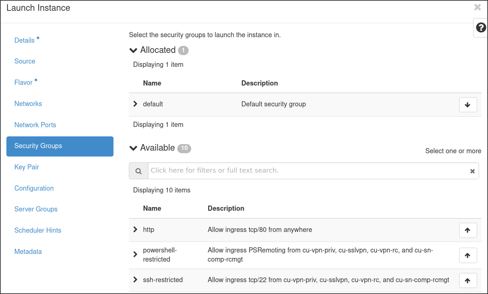
Security Groups act as a virtual firewall for your instance to control inbound and outbound traffic.
Choose
ssh-restricted,http, andhttpsfor this tutorial
click
Nextwhen done to go to the Key Pair screen.
Instance creation: Key Pair#
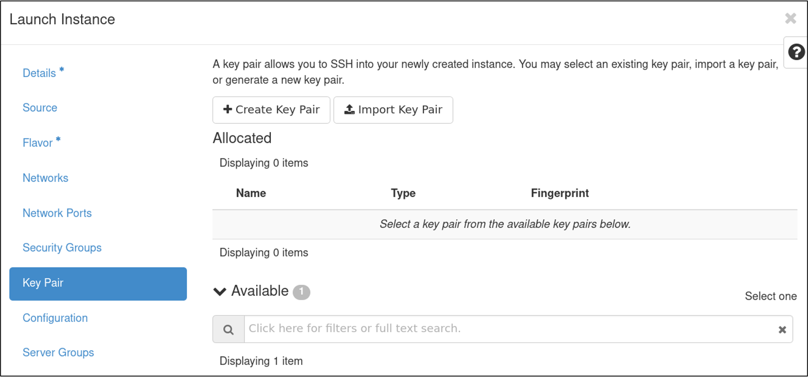
A key pair allows you to SSH into your new instance.
You may select an existing key pair, import a key pair, or generate a new key pair.
Tip: it is often easiest to create a keypair in a terminal on your local machine and import it: https://www.ssh.com/academy/ssh/public-key-authentication
click
Nextwhen done to go to the Configuration screen.
An aside on SSH keypairs: SSH keys are an access credential that is used in the SSH protocol and they are foundational to modern Infrastructure-as-a-Service platforms. Public key authentication provides cryptographic strength that even extremely long passwords can not offer. With SSH, public key authentication improves security considerably as it frees the users from remembering complicated passwords (or worse yet, writing them down).
They can be tricky to set up for new users however, so we’ll go over a simple example here. From your terminal in a local machine use the
ssh-keygencommand to create a new ssh keypair (you can specify cryptographic algorithm, in this case we’ll use the Ed25519 algorithm):$ ssh-keygen -t ed25519 Generating public/private ed25519 key pair. Enter file in which to save the key (/home/username/.ssh/id_ed25519):Here you can specify the full path/name of the keypair files and even set a extra passwords. We’ll press enter twice for the
no passphraseoption. Our new keypairs have been created at/home/username/.ssh/and are calledid_ed25519andid_ed25519.pub.The public key (.pub) can be transferred to other remote servers (this is the key we will import to our CUmulus instance) but the private key (no suffix) should never leave the host machine.
Instance creation: Configuration, Server Group, Scheduler Hints, and Metadata#
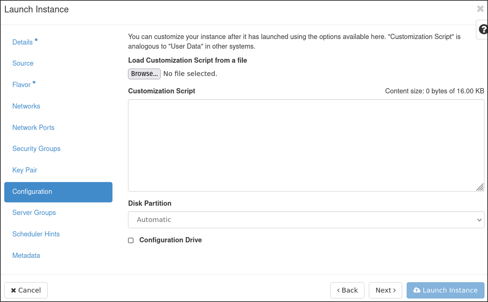
For the remaining screens – Configuration, Server Group, Scheduler Hints, and Metadata – leave these as defaults, as they are extra, optional configuration for the instances.
Instance creation: Launch Instance and Associate IP#
Finally you can click
Launch instance!the instance will take a few minutes to finish provisioning.
You can now associate a Floating IP to enable access to the instance from outside of the CU network.
On the right hand side of the newly created instance choose
Associate Floating IPunder theActionsdropdown
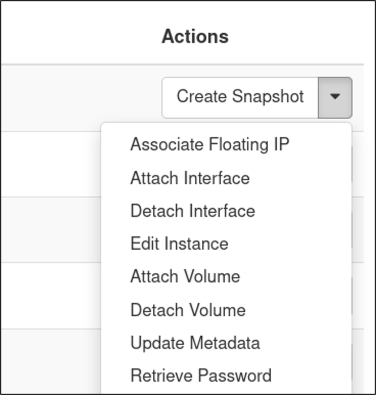
Now select from available IP addresses if needed (e.g., if you’ll be adding a web portal to your instance)
The Select port to be associated option should already be pre-populated with the internal IP of your new instance
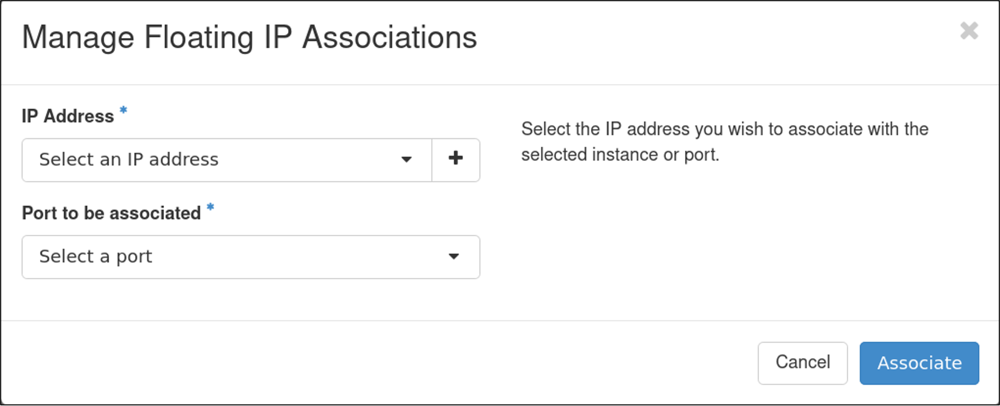
Part 3: Logging into your Instance#
At a minimum, you’ll need to login to your instance via ssh to install the software you’ll be using. Other reasons to login to the instance may be to stop or start services, associate a domain name with your IP, run your software, troubleshoot problems, etc. You are essentially the “system administrator” of your own instance.
To login to an instance via
ssh, you must be on CU VPN to connect (this is CURC restriction)Open up an ssh connection providing the identity (key) file that you associated with the instance in the Key Pair step covered earlier:
$ ssh -i ~/.ssh/<private key> <hostname>@<external floating IP>
Note that
hostnamewill be “ubuntu” for Ubuntu instances, “centos” for Centos instances, etc.For example, for an ubuntu instance your
sshcommand may look something like this:
$ ssh -i ~/.ssh/testkey ubuntu@123.456.789.123
Congratulations! You are now logged into your instance!
You can now:
Install Software
Administer your instance
Run applications and jobs
If you need to perform actions as the root (administrative) user, once logged in you can “sudo” to the root account as follows:
$ sudo su - root
or run a command with the sudo prefix.
Additional Information#
This work has been funded in part by the National Science Foundation under grant OAC-1925766